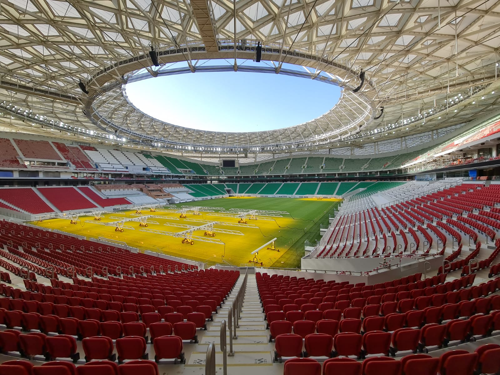
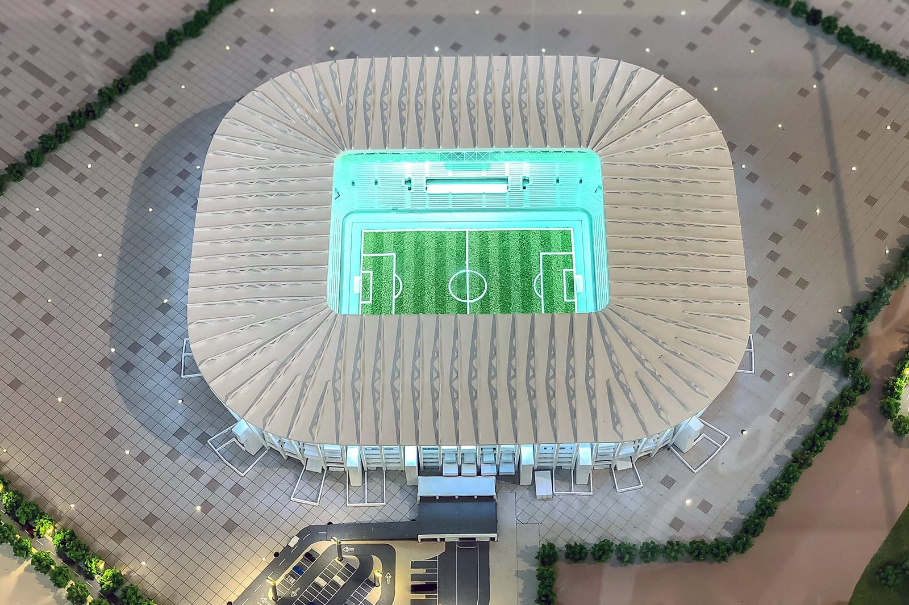
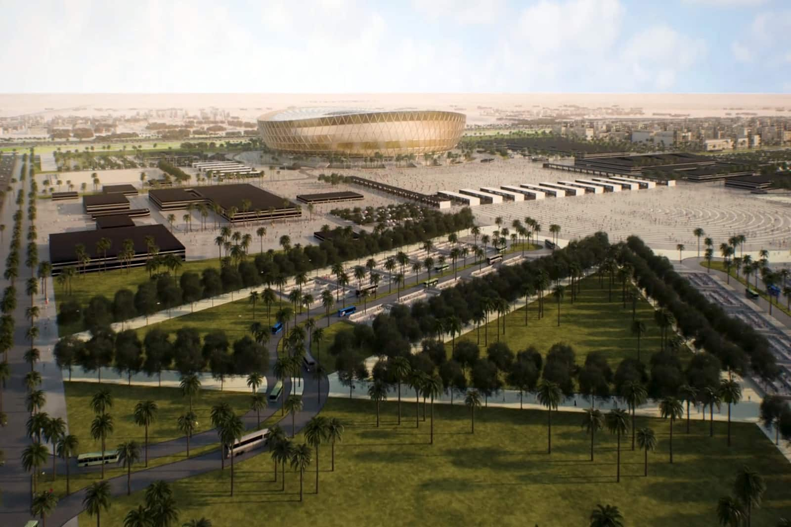

| 2. Estádio Al-Rayyan |
|---|

Situado no antigo estádio Ahmed Bin Ali, o Al-Rayyan tem capacidade para mais de 40.000 pessoas, o que lhe permite receber partidas até a fase de quartas de final da Copa do Mundo do Catar. Uma das cidades mais tradicionais e históricas do Catar, Al-Rayyan fica à beira do deserto e vai permitir que os visitantes conheçam as profundas raízes culturais do Catar. A poucos quilômetros de Doha, os torcedores poderão chegar a esse estádio em uma linha de metrô específica. |
| 4. Estádio Al-Thumama |
|---|
|

A apenas 12 quilômetros do centro de Doha, o estádio Al-Thumama está em construção terá 40.000 lugares. O belo design dessa arena é inspirado na gahfiya, a tradicional touca usada pelos homens árabes. Como vários estádios da Copa do Mundo de 2022, o Al-Thumama vai reduzir a capacidade pela metade após o torneio e doar mais de 20.000 lugares para promover o futebol e construir estádios nos países em desenvolvimento. Para chegar ao estádio, bastará pegar uma linha de metrô específica em Doha. |
| 6. Estádio Ras Abu Aboud |
|---|
|

Com 40.000 lugares às margens do Golfo, o Estádio Ras Abu Aboud é um triunfo da sustentabilidade que fica a poucos quilômetros de distância de Doha e tem vista para a cidade. Feito a partir de contêineres e outros materiais reaproveitados, o estádio será desmontado após a Copa do Mundo de 2022 e as peças serão usadas em outras construções em todo o país. A deslumbrante localização à beira-mar dessa arena será ótima para os fãs, que poderão chegar a Ras Abu Aboud rapidamente de metrô saindo do centro de Doha, do outro lado da baía. |
| 8. Estádio Nacional de Lusail (Estádio Iconic) |
|---|
|

O Estádio Nacional de Lusail vai receber o jogo de abertura e a final da Copa do Mundo de 2022. Atualmente em construção, a arena terá capacidade aproximada de 86.000 pessoas e foi projetada pelos arquitetos britânicos Foster + Partners. Com estrutura inspirada nas antigas técnicas artesanais árabes de tecelagem de cestos, o estádio tem tudo para proporcionar uma abertura e encerramento inesquecíveis para o torneio. A arena fica em Lusail, uma cidade planejada situada ao norte de Doha, que está sendo construída especialmente para o evento. Quando a Copa do Mundo chegar, Lusail terá uma ampla variedade de atrações, incluindo marinas, resorts, lojas de grife, instalações de lazer e muito mais. Apenas 15 quilômetros ao norte do centro de Doha, o Estádio Nacional de Lusail será servido por uma conexão direta de metrô da capital, facilitando o acesso dos torcedores. |